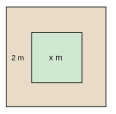
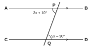

| පරීක්ෂකගේ ප්රයෝජනය සඳහා පමණි | |
|---|---|
| I කොටස – A | / 30 |
| I කොටස – B | / 20 |
| II කොටස | / 50 |
| එකතුව | / 100 |
A කොටස – සියලුම ප්රශ්නවලට දී ඇති ඉඩෙහි පිළිතුරු සපයන්න. (එකකට ලකුණු 2)
2, 6, 12, 20, 30, … සංඛ්යා රටාවේ ඊළඟ පද දෙක ලියන්න.
110012 හා 26 අතරින් විශාල කුමක්ද? ගණනය කිරීම් දක්වන්න.
212 න් 35 හි අගය සොයන්න.
රු. 250, 20% කින් වැඩි කරන්න.
සාධක සොයන්න: 6ab − 9ac
අගය සොයන්න: 50 + 2−1
සුළු කර පිළිතුර විද්යාත්මක අංකනයෙන් දෙන්න: (2 × 103) × (4 × 102)
විසඳන්න: 3x4 = 9
රූපයේ පරිදි සරල රේඛා දෙකක් ඡේදනය වේ. x හි අගය සොයන්න.
ත්රිකෝණයක කෝණ x, x + 20° හා x + 40° වේ. x හි අගය සොයන්න.
වෘත්තයක පරිධිය 88 cm වේ. එහි විෂ්කම්භය සොයන්න. (π = 227)
දිග 8 cm හා පළල 6 cm වූ සෘජුකෝණාස්රයක විකර්ණයක දිග සොයන්න.
U = {1, 2, 3, …, 10} හා A = {U හි ඉරට්ටේ සංඛ්යා} වේ. A′ හි අවයව ලියන්න.
MATHEMATICS යන වචනයේ අකුරු අතරින් අහඹු ලෙස අකුරක් තෝරා ගනී. එය M වීමේ සම්භාවිතාව සොයන්න.
1.5 l හා 750 ml හි එකතුව ලීටරවලින් සොයන්න.
B කොටස – ප්රශ්න දෙකටම මෙම පත්රයේම පිළිතුරු සපයන්න. (එකකට ලකුණු 10)
කාරයක් 84 km ක් ගමන් කිරීමට පෙට්රල් ලීටර් 6 ක් භාවිත කරයි. භාවිත වන පෙට්රල් ප්රමාණය ගමන් කරන දුරට අනුලෝමව සමානුපාතික යැයි උපකල්පනය කරන්න.
රූපයේ දැක්වෙන පරිදි පැත්තක දිග x m වූ සමචතුරස්රාකාර තණබිමක් වටා පළල 2 m වූ මංතීරුවක් ඇත.

ප්රශ්න පහකට පමණක් පිළිතුරු සපයන්න. (එකකට ලකුණු 10)
y = 12x + 1 ශ්රිතය සඳහා අසම්පූර්ණ අගය වගුවක් පහත දැක්වේ.
| x | −4 | −2 | 0 | 2 | 4 |
|---|---|---|---|---|---|
| y | −1 | … | 1 | … | 3 |

(π = 227)
පවුල් 20 ක ළමුන් ගණන පහත සංඛ්යාත වගුවේ දැක්වේ. f සංඛ්යාතය නොදනී.
| ළමුන් ගණන | 1 | 2 | 3 | 4 | 5 |
|---|---|---|---|---|---|
| පවුල් ගණන | 3 | 7 | f | 4 | 2 |